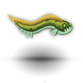
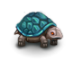
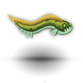
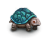
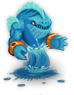
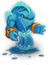
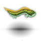
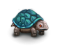
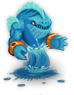

 

The Water Dragon Cave is located in a random water-containing tile of the wilderness. The location of the cave is not decided until the PC starts searching for it, so it is more or less possible to place it in a convenient location, such as near Terinyo. Fire damage in the cave is greatly reduced. It contains Shyssiryxius, the great water dragon (Blup's mother), her treasure hoard and various other aquatic beasts A. The entire cave is submerged, so ordinarily some means of water breathing (section 0.12.1.7) and the Swimming skill are required. If the PC is not born with the Swimming skill, it can be obtained from Blup by giving him potions of carrot juice. The need for these abilities ordinarily keeps low level PCs out of the cave, which is as it should be. In theory a PC with on demand teleportation, high hit points and possibly some regeneration could survive a teleport to Shyssiryxius (36 tiles to the left), a chat and a teleport to the up stairs without water breathing or Swimming.
There are two main reasons for entering:
1. The first is to Chat with Shyssiryxius then return to Terinyo. This allows the PC to inform Blup about the location of his mother, which results in eventual delivery of the Rune-Covered Trident later in the game (see later). If Shyssiryxius is killed before Blup has been informed of her whereabouts, the PC will not receive the Rune-Covered Trident; however, once Blup has been informed, she can be killed even if the trident has not yet arrived without forfeiting it – she already sent it, after all.
2. The second reason for entering the cave is to loot it. There are occasionally outstanding items found in the treasure hoard. As might be expected, Shyssiryxius does not take kindly to thieves and will attack. In addition, no items may be picked up anywhere in the cave without angering the dragon. If the PC picks up an item, she will immediately teleport next to the PC and attack. This includes items that the PC drops, items from monsters killed, or missiles shot. Valuable missile weapons should therefore generally not be used. She does not see in darkness, however. Cast Darkness over desired item(s), pick them up and leave.



|
Shark: Level: 1, DV: 22, PV: 1, Hits: 52, Attacks: 1, Damage: 2d10, Speed 100. Giant shark: Level: 1, DV: 24, PV: 3, Hits: 92, Attacks: 1, Damage: 2d16+6, Speed 100. Giant eel: Level: 1, DV: 22, PV: 2, Hits: 35, Attacks: 1, Damage: 5d5, Speed 120. Giant turtle: Level: 1, DV: 12, PV: 30, Hits: 90, Attacks: 1, Damage: 5d10, Speed 90. Dragon turtle: Level: 1, DV: 15, PV: 35, Hits: 90, Attacks: 1, Damage: 3d20, Speed 90. Giant dragon turtle: Level: 1, DV: 15, PV: 50, Hits: 200, Attacks: 1, Damage: 5d20, Speed 100. Water elemental: Level: 1, DV: 5, PV: 25, Hits: 190, Attacks: 1, Damage: 4d8+6, Speed 100. Greater water elemental: Level: 1, DV: 10, PV: 20, Hits: 300, Attacks: 1, Damage: 5d10+6, Speed 100. |
| Level: 1, DV: 70, PV: 40, Hits: 1140, Attacks: 3, Damage: 6d15+12, Speed: 120. |
If the PC attempts to steal from her treasure hoard (pickup anything rom the ground), she gives a warning about not picking anything up. If the PC persists, she will attack. She is a formidable opponent with a reasonably powerful melee attack and a deadly water breath attack that is capable of dealing about 100 points of damage in a single round. Sources of water breathing will reduce the damage of this attack. She regenerates and is immune to cold. She is capable of teleporting and does so when she panics, making the PC work to find her while remaining underwater the whole time. She can be killed, but it takes an upper level PC, and it doesn't hurt to have some blessed potions of ultra/extra healing along. She is vulnerable to darkness and poison.
 The Rune-Covered Trident is a decent artifact weapon and missile. The trident will arrive by a water elemental messenger not long after reaching character level 16 for PCs
born under the Raven starsign. Others have to wait until level 36.
The Rune-Covered Trident is a decent artifact weapon and missile. The trident will arrive by a water elemental messenger not long after reaching character level 16 for PCs
born under the Raven starsign. Others have to wait until level 36.One of the most powerful guaranteed artifact weapons in the game, though its most unfortunate property is that for non-Raven characters it will likely appear a bit too late to make a lasting difference. Still, its demon slaying properties can be of considerable value in fighting some of the late-game monsters, notably balors, even then. Raven-born characters should make an effort to receive it at the earliest point possible, at which point it is sure to be a tremendous asset.
Characters that have the luxury of using a more powerful artifact in melee might want to use it as a thrown weapon against demons and undead; they can train the Thrown spears weapon skill using spears of returning or large stacks of regular spears.
------------ rune-covered trident (+6, 3d12+6) [+4, +4] {Dx+12} ------------
Weight: 80s
When worn it modifies DV by +4 and PV by +4.
When used in melee combat it grants a +6 bonus to hit and causes 3d12+6 points of damage.
When used as a missile it grants a +2 bonus to hit and causes 3d8+4 points of damage.
It is an undead slayer.
It is a demon slayer.
It modifies your dexterity attribute by +12.
This weapon returns when thrown.
It grants the ability to see invisible things.
It grants immunity to cold attacks.
It grants the ability to breathe water.
|